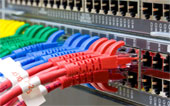
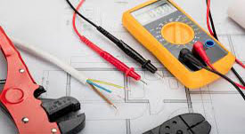
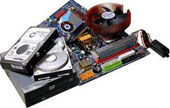

Consiste em um sistema de câmeras cuja as imagens estarão sempre disponíveis. Já não é mais um simples sistema de segurança, está em grande desenvolvimento tecnológico, as imagens podem ser gravadas ou apenas exibidas, além disso pode ser configurado para disparar alarme, possibilitar acesso remoto na internet através de dispositivos moveis e etc.
 Trabalhamos com a disposição organizada e padronizada de conectores e meios de transmissão para redes de informática e telefonia, de modo a tornar a infraestrutura de cabos autônoma quanto ao tipo de aplicação e de layout, permitindo a ligação em uma rede de: servidores, estações, impressoras, telefones, switches, hubs e roteadores.
A instalação elétrica é uma das etapas mais delicadas e merece atenção especial. Por isso, a falta de conhecimento coloca em risco não só quem trabalha na construção da rede, mas compromete os futuros ocupantes da edificação. Por isso determinamos o porte da instalação, estabelecemos os circuitos e especificamos os materiais que serão usados. 
 Poucas são as sensações tão boas quanto a de usar um computador ou notebook novinho em folha. Tudo flui perfeitamente, as respostas são rápidas, os programas e aplicativos funcionam corretamente, e travar é uma coisa que está longe de ocorrer. Entretanto, nós temos a consciência de que a limpeza física deve ser realizadas periodicamente e quando necessário, a formatação para o bom funcionamento da máquina.